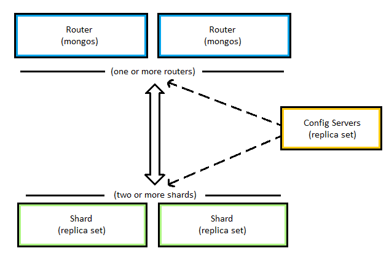

Creating a Shard Cluster¶
Required Components¶
To build a sharded cluster, you will need to setup the following components.
One Shard Config Replica Set, consisting of three members.
Two or more Shard Replica Sets, each consisting of three members.
One MongoDB Shard Router, a single
mongosinstance.
Once the components are setup, we can connect to the MongoDB Shard Router and initialize the shard cluster.
Shard Config Replica Set¶
The shard config replica set is a special type of replica set that stores the metadata for a sharded cluster. Only a single config replica set is needed for a sharded cluster. To setup the shard config replica set, follow the tutorial for Creating a Replica Set. Here are some things to remember while following the tutorial. Some of this may make more sense while you’re going through the tutorial.
You’re setting up three MongoDB instances from clean installations (not an existing Deadline database installation).
You will need a separate MongoDB configuration for your shard config replica set than for your shard replica sets.
You should have
clusterRole: configsvrin your configuration.When initiating the replica set, be sure to include
configsvr: truein the settings.
Shard Replica Sets¶
A shard replica set is one of of many in a sharded cluster. You can read more about MongoDB shards at https://docs.mongodb.com/v3.2/core/sharded-cluster-shards/.
The recommended setup is one shard replica set created from an existing Deadline database, and all other shard replica sets created from clean MongoDB installations. You can follow the tutorial for Creating a Replica Set to create each shard replica set. Here are some things to remember while following the tutorial. Some of this may make more sense while you’re going through the tutorial.
You’re setting up two or more shard replica sets.
If you’re using an existing database, one shard replica set is created from the existing Deadline database installation.
All other shard replica sets are created from clean MongoDB installations.
All shard replica sets can use the same configuration, provided by the Deadline database installation.
You should have
clusterRole: shardsvrin your configuration.
MongoDB Shard Router¶
The shard router mongos is a MongoDB application that handles routing operations to the appropriate shard.
To start the MongoDB shard router, you need to connect mongos to your shard config replica set. This can be done with the following command:
./mongos --configdb <configReplSetName>/<hostname1>:<DB_PORT>,<hostname2>:<DB_PORT>,<hostname3>:<DB_PORT> --port <DB_PORT>Note
<configReplSetName>is the name of the replica set your shard config instances belong to. This should match the name provided when runningrs.initiate()for the config replica set, as well as the separate configuration file for your config replica set instances.Note
<hostname1>,<hostname2>, and<hostname3>should be names or IP addresses of the MongoDB instances in your config replica set. As when creating a replica set, these fields should not be127.0.0.1orlocalhost.Note
The Mongo DB port that is used in the tutorial is
27100(for all replica sets) and will be referred to as <DB_PORT>.
Add Shards to the Cluster¶
After all required components have been setup, you will need to connect to your MongoDB Shard Router. This can be done the same way as connecting to a MongoDB instance.
On the machine running
mongos, navigate to<databaseDirectory>/mongo/application/bin/.Run
./mongo --host localhost --port <DB_PORT>.
You can now begin adding the shard replica sets to the cluster. To add shards to a cluster, use the sh.addShard() command. This should look something like:
sh.addShard( "<replicaSetName>/<hostname>:<DB_PORT>" )Note
<replicaSetName>is the name of the replica set you are adding. This may be something likedlshard0ordlshard1(these are used in the Creating a Replica Set tutorial).Note
<hostname>is the name or IP address of any member of the specified replica set.Note
<DB_PORT>is the Mongo DB port, such as:27100.
Be sure to add all of your shard replica sets to the cluster. You will need to be connected to the mongos shell for the next step, so do not disconnect your shell (if you do, follow the above steps again).
Sharding the Database Collections¶
Now that you have your shard cluster setup, you need to do a bit of database setup to leverage your shards. This includes enabling sharding on the database with sh.enableSharding() and setting up sharding for specific collections with sh.shardCollection(). Make sure you are still connected to the mongos shell that was used to Add Shards to the Cluster.
If you do not already have an existing Deadline database, you can use the repository installer to connect to an existing database. To connect to the sharded cluster, you will configure Deadline to connect to the machine running the mongos instance on port 27100. Once this is done, you should be able to continue with the next few steps.
To begin, you will need to enable sharding on the Deadline database. This can be done using the following command.
sh.enableSharding( "deadline<VERSION>db" )Note
<VERSION>is the Deadline major version such as:10.
Next you will need to use the following command to specify sharding rules for specific collections. The strategy being used here is hashed sharding. More information about MongoDB sharding strategies can be found at https://docs.mongodb.com/v3.2/sharding/#hashed-sharding.
sh.shardCollection( "deadline<VERSION>db.<collection>", { <key> : "hashed" } )Note
<VERSION>is the Deadline major version such as:10.Note
<collection>is the name of the Deadline database collection, such asJobsorJobTasks.Note
<key>is the field that should be used to establish the shard key. It is commonly_id, but in some cases it makes sense to use another field such asJobID(in the case ofJobTasks).
If you already have data in the collection you are attempting to shard, you may need to use create a database index on the <key> field prior to using sh.shardCollection(). The following steps should accomplish this.
In the MongoDB shell, run
use deadline<VERSION>db, where<VERSION>is:10.Use
db.<collection>.createIndex( { <key> : "hashed" } )to create a hashed index.Now use
sh.shardCollection( "deadline<VERSION>db.<collection>", { <key> : "hashed" } ), where<VERSION>is:10.
The mongos instance that you are connected to can be used like any MongoDB mongod instance. If you created a sharded cluster from an existing Deadline database, you may need to update your repository’s connection information to reference the sharded cluster by pointing to the mongos instance. To update Deadline database connection settings, use the UpdateDatabaseSettings command through Deadline Command.
Navigate to the
bin/directory in your Deadline client installation directory.Run the following command to update your connection settings.
./deadlinecommand UpdateDatabaseSettings <repositoryPath> MongoDB <mongosHostname> deadline<VERSION>db <DB_PORT> -1 False False "" "" "" FalseNote
<repositoryPath>is the path to the root directory of your repository.Note
<mongosHostname>is the name or IP address of the machine running themongosinstance.Note
<VERSION>is the Deadline major version such as:10.Note
<DB_PORT>is the Mongo DB port, such as:27100.
You should now have Deadline connected to a MongoDB sharded cluster built from robust shard replica sets.